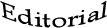
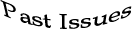
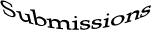
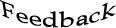
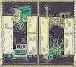

Mark Allinson
Tiel Aisha Ansari
David Anthony
Jon Ballard
Rachel Bunting
Louie Crew
Brian Dion
Brent Fisk
Eve Anthony Hanninen
Christopher Hanson
Don Kimball
Danielle Lapidoth
Ralph C. La Rosa
Mary Ann Mayer
John Milbury-Steen
JBMulligan
Rick Mullin
Kirk Nesset
Cami Park
Rose Poto
Peter Schwartz
Janice D. Soderling
Tony Williams





Enter the II subzine here:

1. Essays, Close Reads and Causeries
D.C. Andersson Form, Ego and the Avant-Garde: A Contrarian ViewArthur Durkee Post-Humanism
Prof. H. Blumqvist Close Reading of J.R.Q. MacPrune’s ‘Now’
Mary Meriam Close Read of Judith Rechter's 'My Molly You were Spying'
Tim Murphy Beowulf to Borges—from Requited, Chapter XI ‘Masters of Memory’
Joseph S. Salemi The Totems of Poetry
2. The View from the Shire
Mike Alexander Houston, We Have a PoemAngela France Poets and Readings and Mics, Oh my!
Janet Kenny Les Murray for Beginners
Quincy Lehr Coffee, College Towns, and Poetry—A View from Oklahoma
Fintan O'Higgins Poetry in Dublin